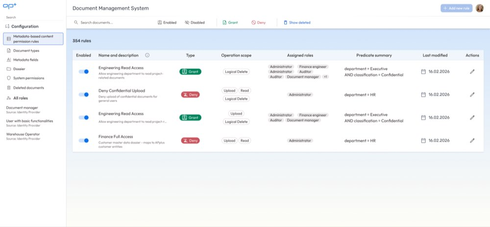

Access is decided by what a document is, not by where it sits. Each rule grants or denies a set of operations to a set of roles, for every document whose metadata satisfies its predicate.

The one thing this screen does not yet show is PRM-12: creating or editing a rule should state how many documents the predicate currently matches, before it is saved. A rule saved blind is a rule nobody can review.